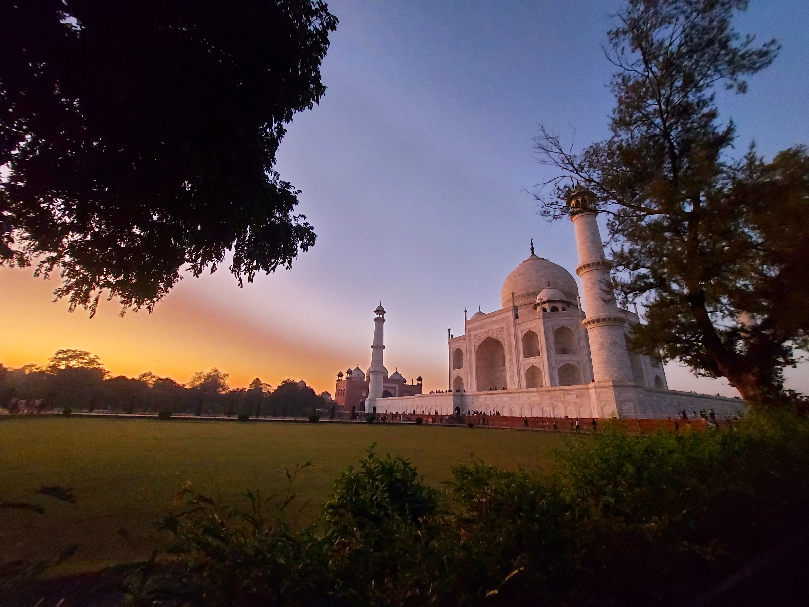
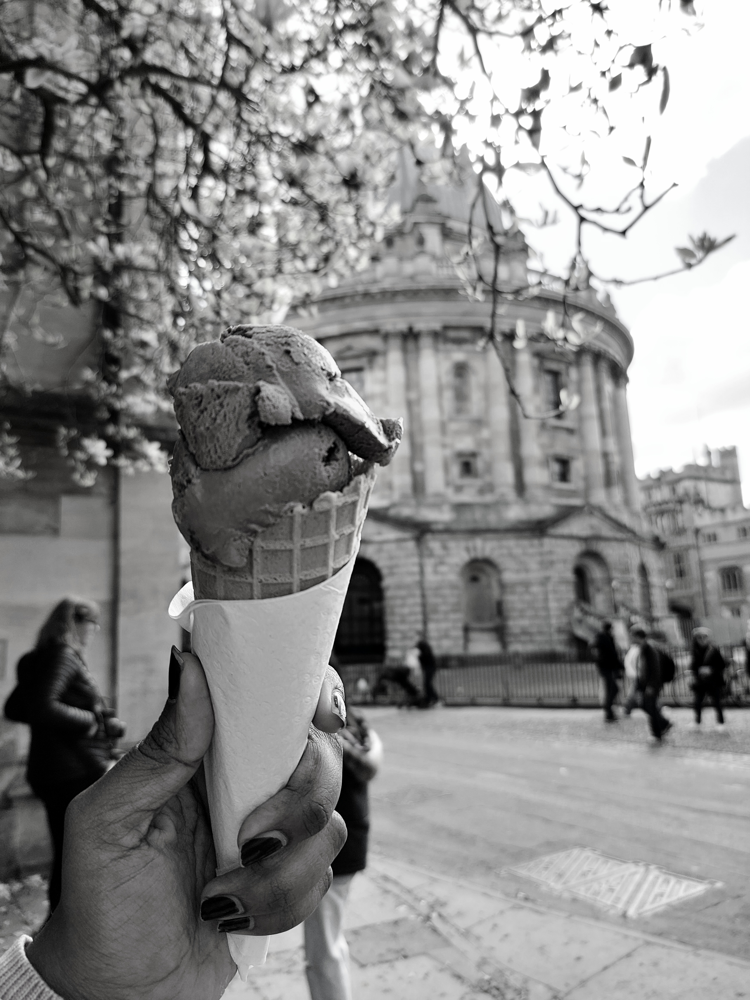

Varkala (Solo Trip)
KeralaSolo travel at its best: sea views, personal reset, and meaningful quiet time.
Read story + photo dumpI travel for perspective, people, and the small moments in between plans.
Some trips are chaotic, some are calm, all of them leave something behind.




The places, the mood, and the memory.
Solo travel at its best: sea views, personal reset, and meaningful quiet time.
Read story + photo dump